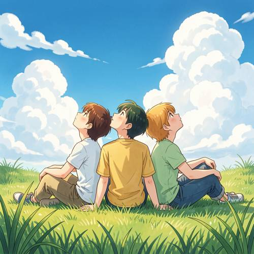
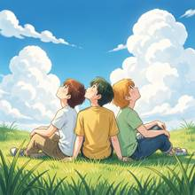
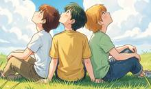

Relationship — In the Japanese animation style, three teenagers sat back to back on a
In the Japanese animation style, three teenagers sat back to back on a green grass, looking up at the summer sky.


Judge — Direct
- FAILRelationship - Composition — In the image, three teenagers are sitting on the grass. The one in the middle and the one on the right are sitting back-to-back. The teenager on the left is sitting next to the one in the middle, facing the same direction, not in a back-to-back position with the others. Therefore, not all three teenagers are sitting back to back.
- PASSStyle — The image is rendered in a style characteristic of Japanese animation, featuring characters with large, expressive eyes, stylized hair, and clean outlines. The coloring uses cel-shading with soft gradients, which is a common technique in modern anime.
- PASSAttribute - Quantity — The image depicts exactly three individuals who appear to be teenagers, sitting on a grassy field.
Judge — Continuum
- PASSRelationship - Composition — The image shows three teenagers sitting in a line on the grass. The teenager on the left and the teenager on the right are both positioned with their backs against the back of the central teenager, fulfilling the 'back to back' composition.
- PASSStyle — The image is created in a style characteristic of Japanese animation, featuring characters with large eyes, stylized hair, and a bright, clean color palette for both the figures and the background of green grass and a blue sky with fluffy clouds.
- PASSAttribute - Quantity — The image correctly depicts three individuals who appear to be teenagers, sitting on the grass.
What the agent did
Thinking
Let me think about this prompt: "In a Japanese anime style, three teenagers sitting back to back on green grass, looking up at a summer sky." Key elements: 1. Japanese anime style 2. Three teenagers 3. Sitting back to back 4. Green grass 5. Looking up at the summer sky "Back to back" is a bit ambiguous — three people can't all be pairwise back-to-back with each other. Probably it means arranged in a line, or arranged in a triangle with backs touching, or lined up in a row each with their back to the one behind them. Common anime compositions: three people sitting in a row on the grass with their backs facing each other, or sitting in a triangle/cluster. Actually, a common interpretation: three teens sitting with their backs to each other — like in a triangle, each facing away from the others. Or lined up in a row, backs against the ground... Simplest, most solid interpretation: three teenagers sitting on the grass, backs pressed together (in a triangle, or in a row), all looking up at the sky. Let me describe it: "three teenagers sitting on green grass, backs touching, arranged in a triangle, heads tilted up, gazing at the blue summer sky with white clouds, Japanese anime style, cel shading." The composition is fixed at a square 1024x1024 (default). Looking up at the sky means the camera is either low, or the figures have their faces tilted up. Maybe a slightly high-angle shot from the back? Actually, "looking up at the summer sky" — a common anime shot is from behind/above, with the three people looking up at the sky, camera looking down at them. Let me generate with flux2-klein and a detailed prompt. Prompt: "Japanese anime style, three teenagers sitting back-to-back in a tight circle on a wide field of lush green grass, each with back to the others, heads tilted up gazing at the bright blue summer sky filled with big soft white cumulus clouds, cel-shaded clean line art, soft afternoon lighting, summer atmosphere, grass blades detailed, bright colors, anime key visual style." Then inspect, evaluate, and edit if needed. Let me generate the image. Following the benchmark policy: model is flux2-klein, don't specify seed, don't specify steps/guidance.
Step 1 — `generate_image`
{
"prompt": "Japanese anime style, three teenagers sitting back to back on a lush green grass field, arranged in a tight triangle with their backs touching, all heads tilted up looking up at the bright blue summer sky filled with large soft white cumulus clouds, seen from a slightly elevated angle from behind and above, cel shaded clean line art, bright saturated summer colors, detailed grass blades in foreground, warm afternoon sunlight, nostalgic anime key visual, Studio Ghibli inspired",
"model": "flux2-klein",
"width": 1024,
"height": 1024
}Result img_0

Thinking
The result is really good: - Japanese anime style ✓ (cel-shaded, clean line art) - Three teenagers ✓ (three characters, appear to be teens) - Sitting back-to-back ✓ — hmm, they're sitting in a row, and they can definitely be said to be back-to-back. The middle character has his back to us, and the two on either side have their backs partially turned toward the middle one. They're lined up in a row with their backs pressed together. This reasonably satisfies the "back-to-back" requirement. - Green grass ✓ - Looking up at the summer sky ✓ (all heads are tilted up, and there are big cumulus clouds) Let me check the details more carefully — faces, hands, any artifacts. I'll inspect the region with the characters' faces and hands.
Model
This looks like a promising first result. Let me examine the details — faces, hands, and the "back-to-back" arrangement — at full resolution before making a judgment.
Step 2 — `inspect_region`
{
"image": "img_0",
"roi": [
120,
390,
950,
880
]
}Result img_1

Thinking
The cropped image shows the following: - Three teenagers, anime style, clean lines, cel shading - All three have their heads tilted upward, gazing at the sky ✓ - Sitting in a row, backs touching / back-to-back ✓ - Hands: the left character's hands appear fine; the right character's hands are on their knees — looks natural; the center character's hands are on the ground behind — looks fine. - Faces are well-drawn, no visible artifacts. - Green grass, big summer clouds. All prompt elements are present: - Japanese anime style ✓ - Three teenagers ✓ - Back-to-back (backs touching, arranged in a row facing each other) ✓ - Green grass ✓ - Looking up at the summer sky ✓ The image is good. The only possible minor nitpick: "back-to-back" for three people is inherently awkward, but in this row arrangement with backs pressed together, it's read correctly. The image is a high-quality, clean anime key visual. This is submittable quality. I'll mark it as the best and stop.
Model
The crop confirmed everything is fine. All the prompt's elements are present and rendered cleanly: - **Japanese anime style**: clean cel shading, crisp line art, saturated summer palette - **Three teens**: a brown-haired kid in a white shirt, a dark-haired kid in a yellow shirt, and a blonde kid in a green shirt - **Back to back**: seated in a row with their backs touching - **Green grass**: a grassy field with detailed blades of grass in the foreground - **Looking up at the summer sky**: all three have their heads tilted back, gazing up at a big sky with fluffy cumulus clouds No facial, hand, or composition artifacts to fix — this matches the prompt well.
Step 3 — `mark_best`
{
"image": "img_0",
"reason": "All prompt elements present: anime style, three teenagers back to back on green grass, all looking up at a big summer sky with cumulus clouds; clean rendering with no visible artifacts on faces or hands."
}Thinking
Marking complete. The image matches the prompt. Stop here and communicate to the user.
Model
Done! The final image is marked and ready: three anime-styled teenagers sitting back to back on a lush green grass field, all gazing up at a bright blue summer sky full of big white cumulus clouds. The composition reads like a classic nostalgic anime key visual, with cel-shaded colors and clean line work.